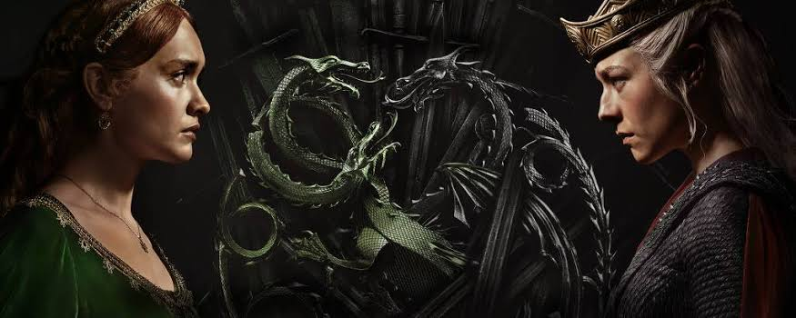
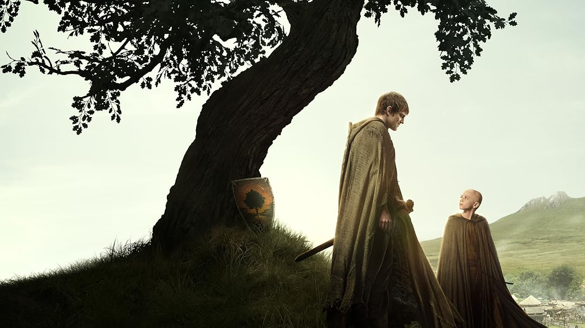
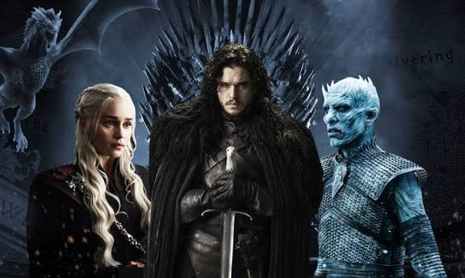

1. A Casa do Dragão (House of the Dragon)

Em uma guerra entre irmãos, quem é o legítimo?
Saber mais2. O Cavaleiro dos Sete Reinos (A Knight of the Seven Kingdoms)

A história de um quarto filho de um quarto filho que se tornou rei.
Saber mais3. Game of Thrones (A Guerra dos Tronos)

Na disputa pelo Trono de Ferro, você vence ou você morre.
Saber mais